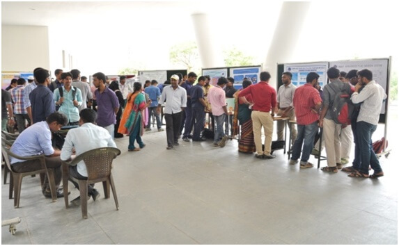
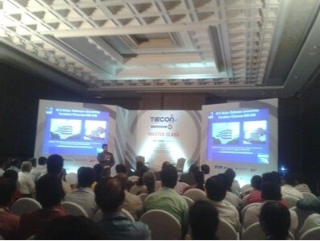
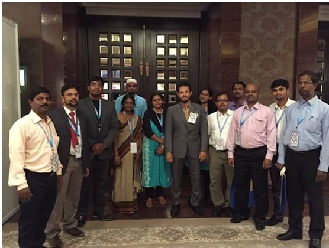

sub title here
Dr.APJ Abdul Kalam Innovation Centre – Nurturing Entrepreneurship
Home
Dr Apj Abdul Kalam Innovation Centre – Nurturing Entrepreneurship
The APJ Abdul Kalam Innovation Centre was established in October 2016 to provide space and facilities to nurture the innovative ideas of the students, scholars and faculties of our University. This centre aims at motivating students to think out-of-the-box to generate creative ideas. It focuses on transforming innovative ideas into products of societal needs by providing technical guidance and filing patents and helping students to commercialize the products in the long run.
-

our APJ centre Coordinators -

our APJ centre celebration
APJ Abdul Kalam Innovation centre was inaugurated by Dr. Akhtar Badshah, Chief Catalyst, Catalytic Innovation Group, presided by Mr. Abdul Qadir A. Rahman Buhari, Chairman, Board of Management, B.S. Abdur Rahman Crescent Institute of Science & Technology on 15th October 2015, birthday of our founder, Alhaj B.S. Abdur Rahman and our former president, Dr. A.P.J. Abdul Kalam to cater to the innovative ideas of the students, scholars and faculties of our Institution.
- Call for proposal with innovative idea.
- Developing prototype of selected innovative projects.
- Basic training to the students on their innovative idea.
- Organizing workshop and demo day.
- Recommending selected prototype to incubation centre.
- Forming mentoring team internal and external.
Objectives
Objectives of the Innovation Centre
- Motivating the students to think laterally and out-of-the-box to generate innovative ideas.
- Transforming innovative ideas into commercial products of societal needs.
- Faculties mentoring the students to carry out the project effectively by providing required technical guidance.
- Providing guidance to students with the help of international resources and local resources for product development.
- Organize workshops and guidance to students towards entrepreneurship.
- Initial funding and space for students to work on idea to develop with commercial product from time of learning.
- Filing patents, IPR and commercialization of the products in the long run.
- Filing patents and commercialization of the products in the long run.
Coordinators
APJ Abdul Kalam Innovation Centre Co-ordinators

M. Parvez Alam,
Director & Chief Executive Officer
.jpg)
Activities
Activities of APJ Abdul Kalam Innovation Centre
INNO IDEA CONTEST-2017
The Inno Idea Contest was conducted on 17.02.17 to showcase the budding talents of our students. The following projects were selected for funding. These projects are under progress.
| SL.NO | TITLE OF THE PROJECT | STUDENT NAME | DEPARTMENT OF THE STUDENT | BUDJECT ALLOTED (Rs) |
|---|---|---|---|---|
| 1 | Smart Clinic | Rohit .J.K., Mohammed Rameezuddin.S, MunirRaja.S |
Mech | 5,000 |
| 2 | Fire Extinguishing Shell | Mohammed Ibrahim, Anjana Preethi, Felica Chariotte |
Polymer | Ph I – 7,000 Ph I I -5,000 |
| 3 | Portable Instant Drinking Water Purifier | Nareendran, Faizal Ali A.P |
Polymer | Ph I – 10,000 Ph II – 5,000 |
| 4 | Detection of Intrusion using infra red video application | Syed Zakariya Ahmed, Syed Md Mufizur Rahman, Amjath Ali |
CSE | Ph I – NIL Ph II – 5,000 |
| 5 | Upper Limb Rehabilitation Robot | Syed Muhammed Zubair, Thoufiq Ahmed T.M, Sivarama Shankaran.P.S |
Mech | Ph I – 5,000 Ph II – 5,000 |
| 6 | Mitigation of NOx emission in internal combustion engines by nitrogen filtration methodology | HariKrishnan.B, RadaKrishnan.P.J, Usaid Hammad, Mohamed Aslam Noorani A.B |
Mech | Ph.I- 10,000 Ph.II- 10,000 |
| 7 | Thermal Insulation for flat roof using glass fiber reinforced gypsum panels and light weight aggregates | Mir Hasnain Ali Razvi,
Mohammed Asir, Mohammed uzair dulvi |
Civil | Ph.I – 10,000 Ph.II – 5000 |
| 8 | Low cost bike theft protection | Mohammed Murtaza Shayan Thoufeeq Md Sadique Shaik Abdul Ayaz |
Mech Mech EEE |
2,000 |
| 9 | Visual Acceleration braking | Mohammed Murtaza Shayan Thoufeeq Md Sadique Shaik Abdul Ayaz |
Mech
Mech EEE |
2,500 |
| 10 | Immersion Heater | Syed Sameeullah | EEE | 2,000 |
| 11 | 3D Printer | V.N. Imadudeen, Abdul Mohisn.S.N, Sheriza Larif.A, Savitha |
ECE | Ph.I- 10,000 Ph.II- 10,000 |
| 12 | Automated system for effective usage of water in Agriculture Farming | Abishek.V, Aravind.B, Kiren Balaji.N |
ECE | 6,500 |
Project
Innovative Projects under progress
The List of innovative projects under progress :2016 – 2017
- Prefabricated Panels using E-waste as low cost construction panels
- Open WIFI for Mobile Sim
- Development of Geopolymer composite
- Polyurethane Foams with improved flame retardant characteristics
- Low cost Air cooler
- Lifi – Audio Transmission
- Voice Controlled Wheel Chair
- Hot spot Manager
- Supercapacitor
- Washing machine controlled using PLC
- Weed Remover
- Advanced Accident Rescue System
- Neonatal Temperature monitoring device
- Body Mass Index – Nutrition Report
INNO IDEA CONTEST-2016
An Inno-Contest 2016 was organized by the Innovation centre on 27.04.16. 30 batches of student teams displayed their innovative ideas. Best ideas were awarded cash price worth Rs.20,000/-
-

our INNO IDEA CONTEST-2016 participants -

our INNO IDEA CONTEST-2016 Project Presentation
TALENT HUNT COMPETITION- CRESNOVATORS-2016
A multi Disciplinary Talent Hunt competition was conducted to develop the Interdisciplinary research collaboration on 12-03-2016.
-

our TALENT HUNT COMPETITION- CRESNOVATORS-2016 Project Presentation -

our TALENT HUNT COMPETITION- CRESNOVATORS-2016 price distribution
- A team comprising of Dr. U. Sabura Banu, Dr. Latha Tamilselvan, Dr C. Tharini, members of Student Engagement Team (SET) visited the Centre for Social Innovation and Entrepreneurship, IIT Madras and Innovation and Incubation Centre, Hindustan University on 10.8.2015. The team members had a detailed discussion with Mr. James Rajanayagam, Project Consultant, K. Vijayalaksmi, Project Officer and Vidhiya Saravanan, Project Associate regarding the activities carried out in CSIE and establishment of Innovation Centre in B.S. Abdur Rahman Institute.
- The first meeting of the Student Innovation Centre was conducted on 20th of August, 2015 at Seminar Hall, EIE Department. Dr. V. M. Perisamy, Vice Chancellor and Dr. V. Murugesan, Registrar briefed about the importance of students getting involved in Innovations of social impact. Department faculty co-ordinators and student representative attended the meeting.
- Motivational experience sharing workshop was conducted on 12.9.2015 in Seminar Hall, III floor, Mechanical Sciences Block by the IDDS participants from B.S. Abdur Rahman Institute.
- A special lecture was given on “Design Thinking and Innovation” by Ms. Yasmeen Fatimah, University of USA on 10th September 2015.
- APJ Abdul Kalam Innovation centre was inaugurated by Dr. Akhtar Badshah, Chief Catalyst, Catalytic Innovation Group on 15th October 2015 birthday of our founder Alhai B.S. Abdur Rahman and our former president Dr. A.P.J. Abdul Kalam. The function was presided by Mr. Abdul Qadir A. Rahman Buhari, Chairman, Board of Management, B.S. Abdur Rahman Institute. Twelve innovative projects were displayed in the Innovation centre.
- Mr. Abdul Qadir A. Rahman Buhari, Chairman, Board of Management, delivered a speech in the Master class session.
-

Mr. Abdul Qadir A. Rahman Buhari, Chairman, Board of Management, delivered a speech -

Seventeen Faculty and five students participated in TIECON 2015 Master class and Conference. - Dr. U. Sabura Banu, Professor visited Universities and Innovation Centres in United Kingdom during 10th November to 15th November 2015. She visited many colleges, i.e., King’s College, Trinity College, St. John’s college and labs such as Watson’s and Crick’s Lab, Mathematical bridge, Cavendish Lab, in Cambridge University on 11th November 2015 and visited the research facilities in the Biotechnology Unit and Chemical Engineering Department.
- She visited Sussex Innovation Centre which is hosted in Central City location even though the University is located in a remote place far from the city. The centre helps in start-ups by way of mentoring to get-off right start, to get smart decision in selecting the right job and organize workshops/seminars to help them build skills.
- She then visited the Impact Hub Westminster on 13th November 2015, which was established in 2011, a global network housing flexible working spaces for incubators with positive social and environmental impact which provides a platform for the start-ups through collaboration and support. She visited Entrepreneurship Career Centre at London Business School on 14th November 2015.
- Mr. Suryarajan, AP/Mechanical Department has received a grant for the IDDS project “Neonatal temperature measurement” and implementation of the project is carried out by Dr. U. Sabura Banu, Mr. Suryarajan and their team in January 2016.
- Innovative Idea Contest “INNO IDEA CONTEST 2016” to be conducted by A.P.J Abdul Kalam Innovation centre of B.S Abdur Rahman Institute on 27.04.2016 .For more info follow the link www.bsarsic.wix.com/innocontest
Achievement
STUDENT ACHIEVEMENTS: 2016 – 2017
| SL. No. | Name of the Student | Project Title & Department | Event &Date | Organized By | Prize |
|---|---|---|---|---|---|
| 1 | Mr. Arun Kumar.B, Mr.Mohammed Aneez.z, Mr. Mohamed Ashik Ali. U |
Design of a Compact High Battery for Rocket Propulsion Using Graphene
E&I |
National Conference on Large Scale Disciplinary Systems of National Significance Trends & Challenges June 25, 2016. | SDSC SHAR, ISRO, Sriharikota | Participated |
| 2 | Mr.C.Manikandan, Ms. G.Divya Lakshmi, Ms.A.Amritha |
Earthcrete and Cob as Alternate Building Material
Civil |
National Student Research Convention- ANVESHAN -March 28th to 30th 2016. | Association of Indian Universities | 1st prize |
| 3 | Mr.R.Sriram, Mr.Khalifa Anwar Ali, Mr.Shahul Hameed | Rehabilitation of Paralyzed Using Hand Gestures
E&I |
National Student Research Convention- ANVESHAN – March 28th to 30th 2016. | Association of Indian Universities | 3rd prize |
| 4 | Mr.Raghul, Ms.S.Sariga, Ms.J.Samaya pooran | Line Follower Robot
ECE |
National Robotics Championship 1st April to 3rd April 2016 | ARK Techno solutions & Robokart.com | 2nd prize |
| 5 | Mr.Vetrivel | Intelligent Security System for B.S.Abdur Rahman Institute
ECE |
Project Competition (ICL) Innovation Creativity Leadership – 7 th Feb, 2016 | Microsoft Research Community | Innovator Award (Refer Figure Microsoft Innovator Award) |
| 6 | Mr.Hamad Arshan.C, Mr.Shaik Abdul Ayaz | Smart Electronic Car
EEE |
The Gordon Lucas Engineering Competition – 21st May 2016 | Loughbouh University, UK | 2nd prize |
| 7 | Ms.Sanjana.P, Mr.Irfanuddin.S, Mr.Munawar.C.M, Mr.Nijas Ahmed, Mr.Imadudden V.M | GPS Controlled Tractor & Home for Agriculture Applications
ECE |
IOT Innovation Challenge- 8th August 2016 | NASSCOM, New Delhi | Selected For Semi Finals |
| 8 | Mr.B.Aravind , Mr.V.Abhishek & Mr.Kiren Balaji | Automated system for Effective usage of water in Agricultural farming”.
ECE |
National level Research Convention ANVESHAN- 2017 on 14th & 15th Feb 2017 | Association of Indian Universities, at TUMKUR University, Karnataka | Third Prize in the Southern Zone level |
- Mr.A.Vetrivel, III year, ECE Department participated in the “Innovation, Creativity and Leadership (ICL), Project Competition” organized by the Microsoft Research Community on 7th February 2016 held at Pondichery Engineering College, Puduchery and bagged the ” Innovator Award” for his Project titled “INTELLIGENT SECURITY SYSTEM FOR B.S. ABDUR Rahman Institute” .
-
Microsoft Innovator Award -
Microsoft Innovator Award certificate
Project
The List of innovative projects under progress :2016 – 2017
INNO IDEA CONTEST-2017
The Inno Idea Contest was conducted on 17.02.17 to showcase the budding talents of our students. The following projects were selected for funding. These projects are under progress.
| SL.NO | TITLE OF THE PROJECT | STUDENT NAME | DEPARTMENT OF THE STUDENT |
|---|---|---|---|
| 1 | Smart Clinic | Rohit .J.K., Mohammed Rameezuddin.S, MunirRaja.S |
Mech |
| 2 | Fire Extinguishing Shell | Mohammed Ibrahim, Anjana Preethi, Felica Chariotte |
Polymer |
| 3 | Portable Instant Drinking Water Purifier | Nareendran, Faizal Ali A.P |
Polymer |
| 4 | Detection of Intrusion using infra red video application | Syed Zakariya Ahmed, Syed Md Mufizur Rahman, Amjath Ali |
CSE |
| 5 | Upper Limb Rehabilitation Robot | Syed Muhammed Zubair, Thoufiq Ahmed T.M, Sivarama Shankaran.P.S |
Mech |
| 6 | Mitigation of NOx emission in internal combustion engines by nitrogen filtration methodology | HariKrishnan.B, RadaKrishnan.P.J, Usaid Hammad, Mohamed Aslam Noorani A.B |
Mech |
| 7 | Thermal Insulation for flat roof using glass fiber reinforced gypsum panels and light weight aggregates | Mir Hasnain Ali Razvi,
Mohammed Asir, Mohammed uzair dulvi |
Civil |
| 8 | Low cost bike theft protection | Mohammed Murtaza Shayan Thoufeeq Md Sadique Shaik Abdul Ayaz |
Mech Mech EEE |
| 9 | Visual Acceleration braking | Mohammed Murtaza Shayan Thoufeeq Md Sadique Shaik Abdul Ayaz |
Mech
Mech EEE |
| 10 | Immersion Heater | Syed Sameeullah | EEE |
| 11 | 3D Printer | V.N. Imadudeen, Abdul Mohisn.S.N, Sheriza Larif.A, Savitha |
ECE |
| 12 | Automated system for effective usage of water in Agriculture Farming | Abishek.V, Aravind.B, Kiren Balaji.N |
ECE |
- Prefabricated Panels using E-waste as low cost construction panels
- Open WIFI for Mobile Sim
- Development of Geopolymer composite
- Polyurethane Foams with improved flame retardant characteristics
- Low cost Air cooler
- Lifi – Audio Transmission
- Voice Controlled Wheel Chair
- Hot spot Manager
- Supercapacitor
- Washing machine controlled using PLC
- Weed Remover
- Advanced Accident Rescue System
- Neonatal Temperature monitoring device
- Body Mass Index – Nutrition Report
Thrust Areas
- Material Science.
- Mechanical and mechatronics.
- Health Science.
- Biotechnology product development.
- IT.
- Energy conservation.
- Software and mobile app commercialization.
- GIS services.
- Electronics product development.
- Electrical instrumentation product development.
- Natural energy product development.
- Civil engineering products development.
- Chemical engineering product development.
- Product development for social needs.